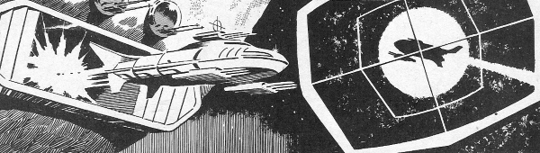

Oddly adopted from the old school (1950s Super Detective Library), given that 2000 AD was going for more of a modern feel. Rick Random, like Dan Dare, is an alliteratively-monikered paste-a-hero, who lives up to his name by getting into scrapes with results from the Traveller RPG random encounters table.
Art by Ron Turner
| Story Title | Parts | Pages | w indicates a wraparound coverCovers | Year(s) | Issues | Writer | Artist | Colourist | Letterer |
|---|---|---|---|---|---|---|---|---|---|
Original publication would have been 66pp. Reprint from 1955 Super Detective Library. ...and the SOS From Space | 1 | 16.5 | 0 | 1978 | SFS1 | SFS1 says it's Harry Harrison but Barney says that's incorrect. Bob Keston | Ron Turner | [b&w] | unknown |
Original publication would have been 64pp. Reprint from Detective Picture Library. ...and the Time Travellers | 2 | 15 | 0 | 1978 | DDA'79 | unknown | unknown | [b&w] | unknown |
| The Riddle of the Astral Assassin | 6 | 33 | 0 | 1979 | 113-118 | Steve Moore | Ron Turner: 1‑5 Carlos Ezquerra: 6 various | [b&w] | Steve Potter: 1, 3‑4 Tom Frame: 2 Jack Potter: 5 John Aldrich: 6 various |
Original publication would have been 64pp. Reprint from Detective Picture Library. Killer in Space | 1 | 16 | 0 | 1979 | DDA'80 | unknown | unknown | [b&w] | unknown |
| >> Features << | |||||||||
Introduction.Rick Random | 1 | 0.5 | 0 | 1978 | SFS1 | T.M.O. | n/a | [b&w] | n/a |
| year | episodes | pages |
| 1977 | 0 | 0 |
| 1978 | 3 | 31.5 |
| 1979 | 7 | 49 |
| 1980 | 0 | 0 |
| 1981 | 0 | 0 |
| 1982 | 0 | 0 |
| 1983 | 0 | 0 |
| 1984 | 0 | 0 |
| 1985 | 0 | 0 |
| 1986 | 0 | 0 |
| 1987 | 0 | 0 |
| 1988 | 0 | 0 |
| 1989 | 0 | 0 |
| 1990 | 0 | 0 |
| 1991 | 0 | 0 |
| 1992 | 0 | 0 |
| 1993 | 0 | 0 |
| 1994 | 0 | 0 |
| 1995 | 0 | 0 |
| 1996 | 0 | 0 |
| 1997 | 0 | 0 |
Comic strip data (excludes other content):